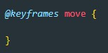
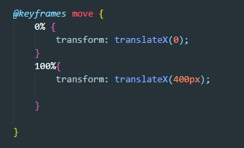
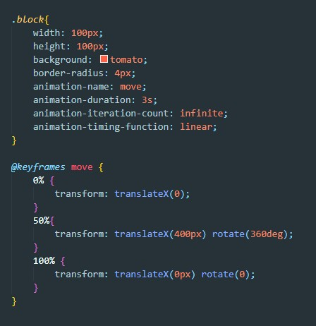

Анимация CSS
Для того что бы инициализировать анимацию используется директива @keyframes, после ключевого слова keyframes мы должны указать имя анимации (в нашем случае это будет move)

Внутри блока мы задаем правила для анимации. У анимации 100 кадров, используя проценты мы можем задавать как будет выглядеть наш анимируемый объект в процессе анимации. Например мы захотели что бы наш квадрат переместился на 400 пикселей вправо. Мы задаем начальное положение (0%) - transform: translateX (0px), а конечное (100%) - transform: translateX (400px)

Могут быть еще и промежуточные кадры (от 0% до 100%)
Мы создали нашу анимаию, как нам теперь применить ее к элементу? для того что бы применить элементу анимацию мы используем свойство CSS animation-name в качестве значения передаем имя нашей анимации. После этого что бы анимацию заработала нужно добавить еще одно свойство: animation-duration - которое определяет время выполнения нашей анимации. для примера зададим значение .5s (т.е. наша анимация будет длиться 0.5 секунды)
Свойства анимации
- animation-name - имя анимации
- animation-duration - длительность анимации
- animation-iteration-count - задает сколько раз будет повторена анимация. можно задать целое число или же можно указать infinite и тогда анимация будет проигрываться бесконечно
- animation-delay - задает задержку анимации (значение задается в секундах)
- animation-direction - задает направление анимации
- normal - Все повторы анимации воспроизводятся так, как указано. Значение по умолчанию.
- reverse - Все повторы анимации воспроизводятся в обратном направлении от того, как они были определены.
- alternate - Каждый нечетный повтор цикла анимации воспроизводятся в нормальном направлении, каждый четный повтор воспроизводится в обратном направлении.
- alternate-reverse - Каждый нечетный повтор цикла анимации воспроизводятся в обратном направлении, каждый четный повтор воспроизводится в нормальном направлении.
- initial - Устанавливает значение свойства в значение по умолчанию.
- inherit - Наследует значение свойства от родительского элемента.
- animation-fill-mode - определяет, какие значения применяются анимацией вне времени ее выполнения, когда анимация завершается.
- none - Значение по умолчанию. Состояние элемента не меняется до или после воспроизведения анимации.
- forwards - После того, как анимация заканчивается, анимация будет применять значения свойств к моменту окончания анимации
- backwards - Анимация будет применять значения свойств, определенные в ключевом кадре, которые начнут первую итерацию анимации.
- both - Позволяет оставлять элемент в первом ключевом кадре до начала анимации (игнорируя положительное значение задержки) и задерживать на последнем кадре до конца последней анимации.
- animation-timing-function - описывает, как будет развиваться анимация между каждой парой ключевых кадров. Во время задержки анимации временные функции не применяются. Про значения читаем ЗДЕСЬ
Пример
